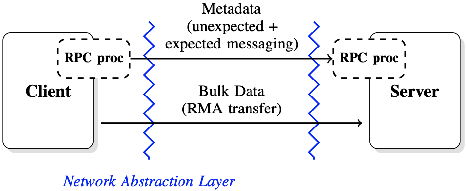
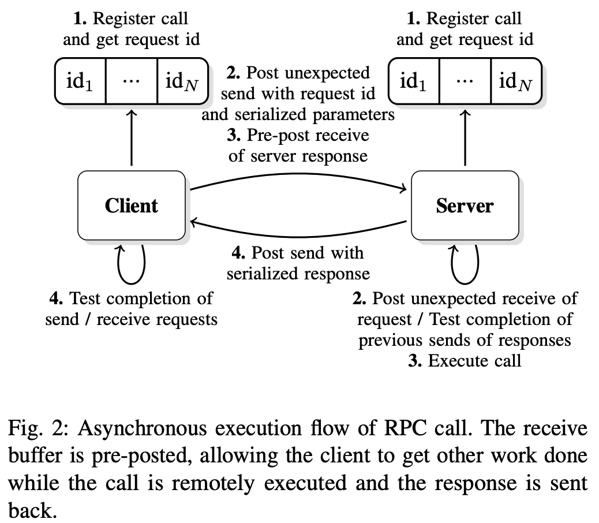
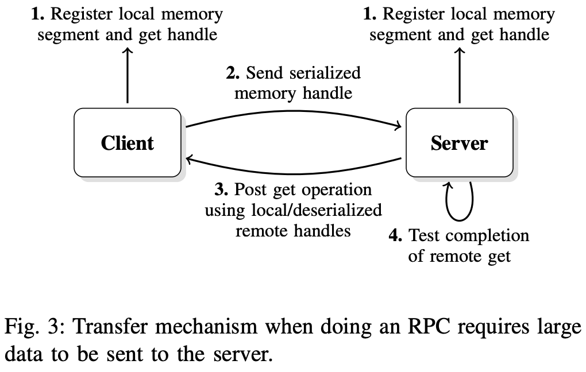
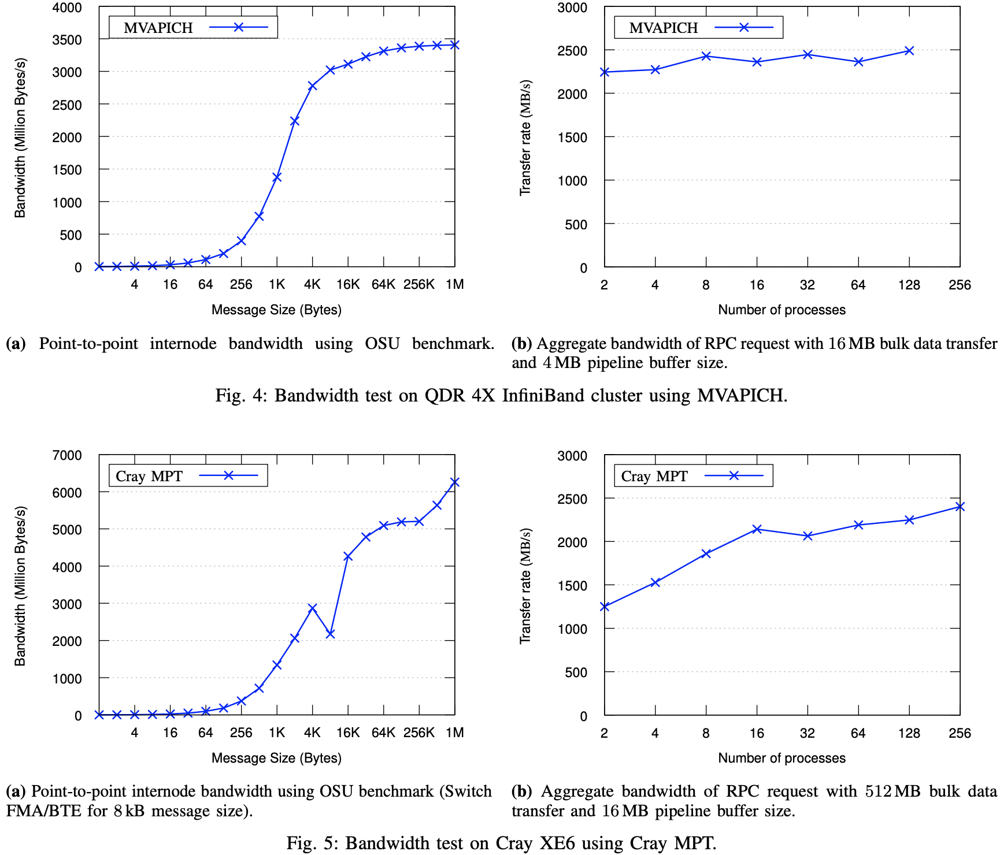
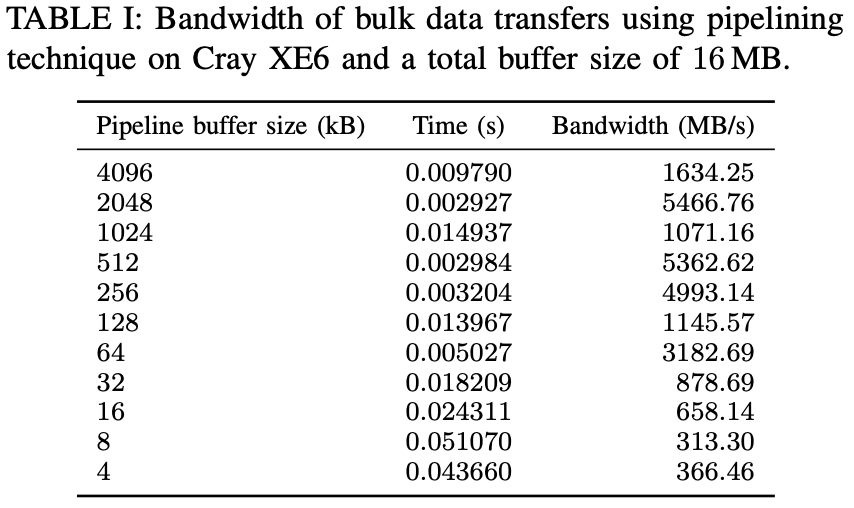

Mercury为高性能计算启用远程过程调用(RPC)
Mercury为高性能计算启用远程过程调用(RPC)
摘要
远程过程调用（RPC）是分布式服务广泛使用的一种技术。 这种技术现在越来越多地用于高性能计算 (HPC) 的上下文中，它允许将例程的执行委托给远程节点，这些节点可以留出并专用于特定任务。 然而，现有的 RPC 框架采用基于套接字的网络接口（通常在 TCP/IP 之上），这不适合 HPC 系统，因为此 API 通常不能很好地映射到这些系统上使用的本机网络传输，从而导致网络性能较低。 此外，现有的 RPC 框架通常不支持处理大数据参数，例如在读取或写入调用中发现的参数。我们在本文中提出了一个异步 RPC 接口，专门设计用于 HPC 系统，允许参数和执行请求的异步传输和直接支持大数据参数。 该接口是通用的，允许传送任何函数调用。 此外，网络实现是抽象的，允许轻松移植到未来的系统并有效使用现有的本地传输机制
I.简介
当在异构环境中工作时，工程师或科学家能够分配应用程序工作流程的各个步骤通常非常有用； 尤其是在高性能计算中，通常会看到嵌入不同类型资源和库的系统或节点，这些资源和库可以专用于特定任务，例如计算、存储或分析和可视化。 远程过程调用 (RPC) [1] 是一种遵循客户端/服务器模型并允许对远程资源透明地执行本地调用的技术。 它包括将本地函数参数序列化到内存缓冲区并将该缓冲区发送到远程目标，远程目标反过来反序列化参数并执行相应的函数调用。 实现该技术的库可以在各种领域中找到，例如使用 Google Protocol Buffers [2] 或 Facebook Thrift [3] 的 Web 服务，或者使用 GridRPC [4] 的网格计算等领域。 RPC 也可以使用更面向对象的方法和框架来实现，例如 CORBA [5] 或 Java RMI [6]，其中抽象对象和方法可以分布在一系列节点或机器上。
但是，在 HPC 系统上使用这些标准和通用的 RPC 框架有两个主要限制：1. 无法利用本地传输机制有效地传输数据，因为这些框架主要是在 TCP/IP 协议之上设计的； 2. 并且无法传输非常大量的数据，因为 RPC 接口施加的限制通常是兆字节(MB)的数量级。 此外，即使没有强制限制，通常也不鼓励通过 RPC 库传输大量数据，主要是由于序列化和编码带来的开销，导致数据在到达远程节点之前被多次复制。
本论文组织如下： 我们首先在第二部分讨论相关工作，然后在第三部分讨论构建接口的网络抽象层，以及为高效传输小型和大型数据而定义的架构。 第 IV 节概述了 API 并展示了其支持使用流水线技术的优势。 然后我们描述了我们接口的网络传输插件的开发以及性能评估结果。 第五节提出结论和未来的工作方向
II.相关工作
网络文件系统 (NFS) [7] 是使用 RPC 处理大量数据传输的一个很好的例子，因此非常接近在 HPC 系统上使用 RPC。 它利用 XDR [8] 序列化任意数据结构并创建独立于系统的描述，然后将生成的字节流发送到远程资源，远程资源可以反序列化并从中取回数据。 它还可以使用单独的传输机制（在最新版本的 NFS 上）通过 RDMA 协议传输数据，在这种情况下，数据在 XDR 流之外进行处理。 我们在本文中介绍的接口遵循类似的原则，但另外直接处理批量数据。 它还不限于使用 XDR 进行数据编码，这可能会影响性能，尤其是当发送方和接收方共享一个公共系统架构时。 通过提供网络抽象层，我们定义的 RPC 接口使用户能够使用小消息或远程内存访问 (RMA) 类型的传输有效地发送小数据和大数据，这些传输完全支持最近 HPC 系统上存在的单边语义。 此外，所有呈现的接口都是非阻塞的，因此允许异步操作模式，防止调用者等待一个操作执行后再发出另一个操作
I/O 转发可扩展性层 (IOFSL) [9] 是另一个项目，本文介绍的部分工作基于该项目。 IOFSL 使用 RPC 专门转发 I/Ocalls。 它定义了一个名为 ZOIDFS 的 API，它在本地序列化函数参数并将它们发送到远程服务器，在那里它们可以依次映射到文件系统特定的 I/O 操作。 扩展 IOFSL 中已经存在的工作的主要动机之一是能够不仅发送一组特定的调用（如通过 ZOIDFS API 定义的调用），而且能够发送各种调用，这些调用可以动态和通用地定义。 同样值得注意的是，IOFSL 建立在并行虚拟文件系统 (PVFS) [11] 中使用的 BMI [10] 网络传输层之上。它允许支持动态连接和容错，还定义了两种类型的消息传递， 意外和预期（在第 III-B 节中描述），可以启用异步操作模式。 然而，BMI 在其设计中受到限制，因为它没有直接公开显式实现从客户端内存到服务器内存的 RDMA 操作所需的 RMA 语义，这可能是一个问题和性能限制（使用 RMA 方法的主要优点在第 III 节中描述 - B). 此外，虽然 BMI 不提供单边操作，但它确实提供了一组相对较高级别的网络操作。 这使得将 BMI 移植到新的网络传输（例如 CrayGemini 互连 [12]）成为一项重要的工作，并且比它应该更耗时，因为在我们的上下文中实现 RPC 只需要 BMI 提供的功能的一个子集
另一个项目，桑迪亚国家实验室的 NEtworkScalable 服务接口 (Nessie) [13] 系统提供了一个简单的 RPC 机制，最初是为 LightweightFile Systems [14] 项目开发的。 它提供了一个异步RPC的解决方案，主要是为了重叠计算和I/O而设计的。 Nessie 的 RPC 接口直接依赖于 Sun XDR 解决方案，该解决方案主要设计用于异构架构之间的通信，即使实际上所有高性能计算系统都是同构的。Nessie 提供了一种单独的机制来处理批量数据传输，它可以使用 RDMA 从一个高效地传输数据 内存到另一个，并支持多种网络传输。 Nessie 客户端使用 RPC 接口将控制消息推送到服务器。 此外，Nessie 公开了一个不同的、单方面的 API（类似于 Portals [15]），用户可以使用它在客户端和服务器之间推送或拉取数据。Mercury 不同，因为它的接口本身也支持 RDMA，可以透明地处理 通过自动生成代表远程大数据参数的抽象内存句柄为用户提供批量数据，这些句柄更易于操作，不需要用户做任何额外的工作。如果需要，Mercury 还提供对数据传输的细粒度控制（例如，实现流水线）。 此外，Mercury 提供了比 Nessie 更高级的接口，大大减少了实现 RPC 功能所需的用户代码量
另一种类似的方法可以在 Decoupledand Asynchronous Remote Transfers (DART) [16] 项目中看到。虽然 DART 未定义为显式 RPC 框架，但它允许使用客户端/服务器模型从计算节点上运行的应用程序传输大量数据 HPC 系统到本地存储或远程位置，以实现远程应用程序监控、数据分析、代码耦合和数据归档。 DART 试图满足的关键要求包括最小化应用程序的数据传输开销、实现高吞吐量、低延迟数据传输以及防止数据丢失。 为了实现这些目标，DART 的设计使得专用节点（即与应用程序计算节点分离）使用 RDMA 从计算节点的内存中异步提取数据。 通过这种方式，从应用程序计算节点到专用节点的昂贵数据 I/O 和流操作被卸载，并允许应用程序在数据传输的同时进行。虽然使用 DART 是不透明的，因此需要用户发送明确的请求，但有 在我们的网络抽象层中集成此类框架并没有固有限制，因此将其包装在我们定义的 RPC 层中，从而允许用户在其支持的平台上使用 DART 传输数据。
III.架构
如前一节所述，Mercury 的接口依赖于三个主要组件：网络抽象层NA、能够以通用方式处理调用的 RPC 接口和批量数据接口(Bulk)，它补充了 RPC 层，旨在轻松传输大量数据 通过抽象内存段的数据量。 我们在本节中介绍了整体架构及其每个组件。
A概述
RPC 接口遵循客户端/服务器架构。 如图 1 中所述，发出远程调用会导致不同的步骤，具体取决于与调用关联的数据的大小。 我们区分两种类型的传输：包含典型函数参数的传输，通常很小，称为元数据(metadata)，以及描述大量数据的函数参数的传输，称为批量数据(bulk)。
通过接口发送的每个 RPC 调用都会导致函数参数的序列化 进入内存缓冲区（其大小通常限制为 1 KB，具体取决于互连），然后使用网络抽象层接口将其发送到服务器。 关键要求之一是在传输的任何阶段限制内存副本，尤其是在传输大量数据时。 因此，如果发送的数据很小，它会被序列化并使用小消息发送，否则将在同一条小消息中将要传输的内存区域的描述发送到服务器，然后服务器可以开始拉取数据（如果数据 是远程调用的输入）或推送数据（如果数据是远程调用的输出）。 限制对服务器的初始 RPC 请求的大小也有助于可伸缩性，因为它避免了在大量客户端同时访问同一服务器的情况下不必要的服务器资源消耗。 根据所需的控制程度，所有这些步骤都可以由 Mercury 透明地处理或直接暴露给用户

图1, 架构概述：每一方都使用一个RPC处理器来序列化和反序列化通过接口发送的参数。调用具有较小参数的函数导致使用网络抽象层暴露的短消息机制，而包含大数据参数的函数额外使用RMA机制
B. 网络抽象层
网络抽象层的主要目的是顾名思义，抽象暴露给用户的网络协议，允许通过插件系统集成多种传输。 这种架构强加的一个直接后果是提供一个轻量级的接口，为此只需要合理的努力来实现一个新的插件。 接口本身必须定义三种主要类型的数据传输机制：意外消息传递unexpect、预期消息传递expected和远程内存访问rma；以及在客户端和服务器之间动态建立连接所需的额外设置（尽管动态连接可能并不总是可行，具体取决于底层 使用的网络实现）。意外和预期的消息传递仅限于短消息的传输，并使用双向方法。出于性能原因，最大消息大小由互连决定，可以小至几千字节。 意外消息传递的概念用于其他通信协议，例如 BMI [10]。 通过网络抽象层发送意外消息不需要在完成之前发布匹配的接收。 通过使用这种机制，客户端不会被阻塞，并且服务器可以在每次发出意外接收时获取已发布的新消息。 预期消息和意外消息之间的另一个区别是意外消息可以从任何远程源到达，而预期消息需要知道远程源。远程内存访问 (RMA) 接口允许访问远程内存块（连续和非连续）。 在大多数单向接口和 RDMA 协议中，内存必须先注册到网络接口控制器 (NIC) 才能使用。 在网络抽象层中定义接口的目的是创建一级抽象并定义与大多数 RMA 协议兼容的 API。 将内存段注册到 NIC 通常会导致创建该段的句柄，其中包含虚拟地址信息等。创建的本地句柄需要在远程节点可以开始放置或获取操作之前传达给远程节点。 网络抽象负责确保这些内存句柄可以序列化并通过网络传输。交换句柄后，可以启动非阻塞放置或获取。 在大多数互连上，put 和 get 将映射到互连提供的特定 API 提供的 put 和 get 操作。 网络抽象接口旨在允许在双向发送和接收网络协议（例如仅支持双向消息传递方法的 TCP/IP）之上模拟单向传输。有了这个网络抽象层，Mercury 可以很容易地成为 移植以支持新的互连。 网络抽象提供的相对有限的功能（例如，没有无限大小的双向消息）确保接近本机性能
C. RPC 接口和元数据
发送一个只涉及小数据的调用使用了 III-B 中定义的意外/预期消息传递。 然而，在更高的层次上，向服务器发送函数调用具体意味着客户端必须知道如何在开始发送信息之前对输入参数进行编码，并且在收到服务器的响应后知道如何解码输出参数。 在服务器端，服务器还必须知道在收到 RPC 请求时要执行什么，以及如何对输入和输出参数进行解码和编码。 描述函数调用和编码/解码参数的框架是我们接口操作的关键

图 2：RPC 调用的异步执行流程。 接收缓冲区是预先发布的，允许客户端在远程执行调用并发回响应的同时完成其他工作
其中一个要点是能够支持一组可以以通用方式发送到服务器的函数调用，从而避免一组硬编码例程的限制。通用框架如图 2 所示。在初始化阶段， 客户端和服务器通过使用映射到每个操作的唯一 ID 的唯一函数名称注册编码和解码函数，由客户端和服务器共享。 服务器还注册了在通过函数调用接收到操作 ID 时需要执行的回调。 要发送不涉及批量数据传输的函数调用，客户端将输入参数与该操作 ID 一起编码到缓冲区中，并使用非阻塞的非预期消息传递协议将其发送到服务器。 为了确保完全异步，用于从服务器接收响应的内存缓冲区也由客户端预先发布。 出于效率和资源消耗的原因，这些消息的大小受到限制（通常为几千字节）。但是，如果元数据超过意外消息的大小，客户端将需要在单独的消息中传输元数据，从而透明地使用批量数据 III-D 中描述的接口，用于向服务器公开额外的元数据
当服务器收到一个新的请求 ID 时，它会查找相应的回调、解码输入参数、执行函数调用、对输出参数进行编码并开始将响应发送回客户端。 将响应发送回客户端也是非阻塞的，因此，在接收新的函数调用时，服务器还可以测试响应请求列表以检查它们是否完成，并在操作完成时释放相应的资源。 一旦客户端知道已经收到响应（使用等待/测试调用）并且函数调用已经远程完成，它就可以解码输出参数和用于传输的免费资源。有了这个机制，它 变得易于扩展以处理大量数据
D. 大块数据接口
除了前面的接口，一些函数调用可能需要传输更大量的数据。 对于这些函数调用，使用了批量数据接口，它建立在网络抽象层中定义的远程内存访问协议之上。 只有 RPC 服务器启动单向传输，以便它可以在控制数据流的同时保护其内存免受并发访问。

如图 3 中所述，批量数据传输接口使用单向通信方法。 RPC 客户端通过创建批量数据描述符（包含虚拟内存地址信息、正在公开的内存区域的大小以及可能取决于底层网络实现的其他参数）向 RPC 服务器公开内存区域。 然后可以将批量数据描述符序列化并与 RPC 请求参数一起发送到 RPC 服务器（使用 III-C 节中定义的 RPC 接口）。 当服务器对输入参数进行解码时，它反序列化批量数据描述符并获取必须传输的内存缓冲区的大小
在RPC请求消耗大数据参数的情况下，RPC服务器可能会分配需要接收的数据大小的缓冲区，通过创建批量数据块描述符暴露其本地内存区域并发起异步读取/ 获取对该内存区域的操作。 RPC 服务器然后等待/测试操作的完成，并在数据完全接收后执行调用（如果执行调用支持它，则部分接收）。 然后将响应（即调用的结果）发送回 RPC 客户端并释放内存句柄
通过此过程传输数据对用户来说是透明的，尤其是因为 RPC 接口还可以负责序列化/反序列化内存句柄以及其他参数。 当必须传输非连续的内存段时，这一点尤为重要。 在这两种情况下，内存段都会自动注册到 RPC 客户端，并由创建的内存句柄抽象出来。 然后内存句柄与 RPC 函数的参数一起序列化，并使用非连续内存区域传输大数据，因此导致与上述相同的过程。 请注意，在这种情况下，句柄可能是可变大小的，因为它可能包含更多信息，并且还取决于可以支持直接注册内存段的底层网络实现
IV.评估
先前定义的体系结构使通用 RPC 调用能够与句柄一起传送，这些句柄可以在需要批量数据传输时描述连续和非连续的内存区域。 我们将在本节介绍如何利用此体系结构来构建可以轻松按需请求数据块的流水线机制。 流水线批量数据传输流水线传输是一个典型的用例，当人们想要重叠通信和执行时。 在我们描述的架构中，请求处理大量数据会导致从 RPC 客户端向 RPC 服务器发送 RPC 请求以及批量数据传输。
A. 流水线批量数据传输
在一个常见的用例中，服务器可能会在执行请求的调用之前等待接收到全部数据。 然而，通过流水线传输，实际上可以在数据传输时开始处理数据，避免为整个 RMA 传输支付延迟成本。 请注意，尽管我们在下面的示例中重点关注这一点，但如果 RPC 服务器没有足够的内存来处理需要发送的所有数据，使用此技术也可能特别有用，在这种情况下，它还需要在处理时传输数据
RPC 客户端代码的简化版本如下所示
|
|
客户初始化时，它会注册RPC调用它想要发送。 因为此调用涉及非连续的批量数据转换器，所以记忆段描述了创建和注册的内存区域。 由此产生的Bulk_handle Isthen与其他CallParameter一起传递给HG_Forward调用。 然后，可以在请求完成后等待响应并免费的thebulk句柄（将来也会发送通知可能允许较早的散装句柄，因此可以取消内存的内存）。管道上的机制发生在服务器上。 ，要照顾批量转移。 管道本身具有HEREA固定管道尺寸和管道缓冲区大小。 RPC服务器代码简化了
|
|
每个RPC服务器初始化后，都必须绕过HG_HANDLER_PROCESS调用，该调用将等待新的RPCRequests并执行相应的注册回调（在同一线程或新线程中取决于用户需求）。 必经请求的请求，用于获取要传输的数据的总尺寸的Bulk_handle参数可以分配适当大小的缓冲区并启动批量的DataTransfers。 在此示例中，管道尺寸设置为4，并且Pipeline缓冲区大小设置为256，这意味着启动了4个256个字节的RmareQuests。 然后，可以等待第一个256个字节到达并进行处理。 当它处理时，其他零件可能会到达。 一旦一件被处理了一件，就开始了iSAT阶段4的新的RMA转移，并且可以等待下一个件，然后对其进行处理。 请注意，虽然在客户端上注册的内存区域是不合格的，但hg_bulk_read呼叫theserver将其显示为连续区域，简化了服务器代码。 此外，可以给出逻辑偏移（相对于数据的开头）单独移动数据片，而大量数据接口将映射从连续逻辑偏移到非连接的客户端内存区域。我们继续此过程，直到所有过程 数据已被读取 /处理，响应（即功能调用的结果）可以发送回。 同样，我们仅通过调用HG_HANDLER_START_OUTPUT调用来开始发送响应，并且仅通过调用HG_HANDLER_PROCESS来测试其完成，在这种情况下，与响应相关的资源将受到影响。 请注意，所有函数都支持异步执行，如果需要，可以在事件驱动的代码中使用Mercury(HG)
B.网络插件和测试环境
截至本文撰写的日期已经开发了两个插件，以说明网络抽象层的功能。 此时，尚未优化插件的性能。 一个建立在BMI顶部[10]。 但是，AS我们已经在第二节中指出的是，BMI并未有效利用已定义的网络行动层和单方面的批量数据传输结构。 另一个建立在MPI [17]的顶部，该[17]仅提供完整的RMA语义[18]最近的MPI3 [19]。 许多MPI实现，特别是已经安装的机器的Thosedelas，尚无ProvideAll MPI3功能。 由于尚未将BMI移植到室内HPC系统，以说明功能和测量性能结果，因此我们仅考虑MPI插件本文。 该插件能够在现有的HPCSystems上运行，仅限于MPI-2功能（例如Cray Systems），在两面消息的顶部实现批量数据传输。在实践中，这意味着对于每个批量数据传输， 需要将控制消息发送到theclient，以请求发送或接收数据。 然后，可以使用进度线程输入进度功能来实现转移的进度。对于测试，我们使用两个不同的HPC系统。 onis是一个Infiniband QDR 4X群集，带有mvapich [20] 1.8.1，另一个是带有Cray MPT的Cray Xe6 [21] 5.6.0
C. 性能评估


作为第一个实验的性能评估，我们测量了为空函数（即，即将返回的函数）所花费的小时RPC调用（没有任何批量数据传输）。 在Cray XE6机器上，测量了20个RPC调用的杂种时间，每个呼叫花费了23 µ。 但是，正如前面指出的那样，大多数HPC系统都是均匀的，因此不需要XDR提供的数据可移植性。 禁用Xdrencoding（改为执行简单的存储器副本）时，THETIME会降至20 µs。 这种不可忽略的改进（15％）证明了针对HPC环境设计RPC框架的好处。 第二个实验包括测试以前在客户端和一台服务器之间解释的批量数据传输的管道技术传输。 如表I所示，在cray xe6访问转移时，当请求刀片已经完成时，在进行其他管道阶段时，可以特别有效地效率，从而使我们获得很高的带宽。 但是，该系统上的高注入带宽使得很难为小数据包（例如，由于单侧功能的模拟，该系统的批量数据控制消息）很难获得良好的性能），特别是当数据流不连续的情况下
最后，我们评估了RPC Serverby的可伸缩性，在增加客户端时数时评估了总数据吞吐量。 图4和5分别显示了AQDR Infiniband系统（使用MVAPICH）和CRAY XE6SYSTEM的结果。 在这两种情况下，部分由于服务器sidebulk数据流控制机制，HG显示出卓越的性能，并且吞吐量增加或剩余stableas，并发客户的数量增加。 为了进行比较，显示了每个系统上的点消息带宽。在Infiniband系统中，Mercury达到了最大网络带宽的70％。 考虑到HG时间代表了数据传输的RPC调用，这是一个很好的结果，与发送OSU基准的Asingle消息的时间相比。 在Cray系统上，性能不佳（约占峰值的40％）。 我们期望这主要是由于该系统的较小信息性能，以及由单方面仿真引起的额外控制措施。 然而，低性能也可能是由系统限制引起的，考虑到 Nessie 的类似操作（读取）[22] 的性能显示相同的低带宽，即使它通过绕过 MPI 并使用真正的 RDMA interconnect 的原生 uGNI API
V.结论和未来的工作
在本文中，我们介绍了Mercury框架。 Mercury专门设计用于在高性能计算环境中提供RPC服务。 Mercury构建了与当代HPC网络环境的功能相匹配的小型，易于移植的网络抽象层。 与大多数其他RPC框架不同，Mercury为处理远程呼叫的大型数据参数提供了直接支持。 Mercury的网络协议旨在扩展到数千个客户。 我们通过实施远程写入功能（包括大型数据参数的管道）来证明框架的力量。 我们随后在两个不同的 HPC 系统上评估了我们的实施，展示了单客户端性能和多客户端可扩展性。
在Mercury提供的高性能，便携式，通用的RPC功能的可用性中，IOFSL可以通过替换内部，硬codediofsl代码来替换和现代化 通过水Mercury Call。 由于网络抽象的层面顶部已经构建了HG的顶部，因此已经使用BMI Fornetwork连接性支持IOFSL Continueto的现有部署，同时利用了Mercury的NetworkProtocol的改进性可伸缩性和性能。 RPC呼叫。 取消对节点或网络可能失败的弹性非环境很重要。 未来的工作将包括对取消的支持。虽然 Mercury 已经支持高效执行 RPC 调用所需的所有功能，但可以进一步减少每次调用所需的用户代码量。 Mercury 的未来版本将提供一组预处理器宏，通过自动生成尽可能多的样板代码来减少用户的工作量, 网络抽象层当前具有用于BMI，MPI-2和MPI-3的插件。 但是，作为在客户端/服务器上下文中使用的MPI RMA功能[23]，我们打算增加对Infiniband网络的支持，以及Cray XT andibm BG/P和Q网络
致谢，本文介绍的工作得到了 Exascale FastForward 项目的支持，LLNS 分包合同号。 B599860，由美国能源部科学办公室高级科学计算机研究办公室根据合同 DE-AC02-06CH11357 提供。
参考
论文链接: https://www.mcs.anl.gov/papers/P4082-0613_1.pdf
[1] A. D. Birrell and B. J. Nelson, “Implementing Remote Procedure Calls,” ACM Trans. Comput. Syst., vol. 2, no. 1, pp. 39–59, Feb. 1984.
[2] Google Inc, “Protocol Buffers,” 2012. [Online]. Available: https://developers.google.com/protocol-buffers
[3] M. Slee, A. Agarwal, and M. Kwiatkowski, “Thrift: Scalable CrossLanguage Services Implementation,” 2007.
[4] K. Seymour, H. Nakada, S. Matsuoka, J. Dongarra, C. Lee, and H. Casanova, “Overview of GridRPC: A Remote Procedure Call API for Grid Computing,” in Grid Computing—GRID 2002, ser. Lecture Notes in Computer Science, M. Parashar, Ed. Springer Berlin Heidelberg, 2002, vol. 2536, pp. 274–278.
[5] Object Management Group, “Common Object Request Broker Architecture (CORBA),” 2012. [Online]. Available: http://www.omg.org/ spec/CORBA
[6] A. Wollrath, R. Riggs, and J. Waldo, “A Distributed Object Model for the JavaTMSystem,” in Proceedings of the 2nd conference on USENIX Conference on Object-Oriented Technologies (COOTS) - Volume 2, ser. COOTS’96. Berkeley, CA, USA: USENIX Association, 1996, pp.17–17.
[7] R. Sandberg, D. Golgberg, S. Kleiman, D. Walsh, and B. Lyon, “Innovations in internet working,” C. Partridge, Ed. Norwood, MA, USA: Artech House, Inc., 1988, ch. Design and Implementation of the Sun Network Filesystem, pp. 379–390.
[8] Sun Microsystems Inc, “RFC 1014—XDR: External Data Representation Standard,” 1987. [Online]. Available: http://tools.ietf.org/html/rfc1014
[9] N. Ali, P. Carns, K. Iskra, D. Kimpe, S. Lang, R. Latham, R. Ross, L. Ward, and P. Sadayappan, “Scalable I/O forwarding framework for high-performance computing systems,” in IEEE International Conference on Cluster Computing and Workshops 2009, ser. CLUSTER ’09, 2009, pp. 1–10.
[10] P. Carns, I. Ligon, W., R. Ross, and P. Wyckoff, “BMI: a networkabstraction layer for parallel I/O,” in 19th IEEE International Parallel and Distributed Processing Symposium, 2005.
[11] P. H. Carns, W. B. Ligon, III, R. B. Ross, and R. Thakur, “PVFS: A Parallel File System for Linux Clusters,” in In Proceedings of the 4th Annual Linux Showcase and Conference. USENIX Association, 2000, pp. 317–327.
[12] R. Alverson, D. Roweth, and L. Kaplan, “The Gemini System Interconnect,” in IEEE 18th Annual Symposium on High-Performance Interconnects, ser. HOTI, 2010, pp. 83–87.
[13] J. Lofstead, R. Oldfield, T. Kordenbrock, and C. Reiss, “Extending Scalability of Collective IO Through Nessie and Staging,” in Proceedings of the Sixth Workshop on Parallel Data Storage, ser. PDSW ’11. New York, NY, USA: ACM, 2011, pp. 7–12.
[14] R. Oldfield, P. Widener, A. Maccabe, L. Ward, and T. Kordenbrock, “Efficient Data-Movement for Lightweight I/O,” in Cluster Computing, 2006 IEEE International Conference on, 2006, pp. 1–9.
[15] R. Brightwell, T. Hudson, K. Pedretti, R. Riesen, and K. Underwood, “Implementation and Performance of Portals 3.3 on the Cray XT3,” in Cluster Computing, 2005. IEEE International, 2005, pp. 1–10.
[16] C. Docan, M. Parashar, and S. Klasky, “Enabling High-speed Asynchronous Data Extraction and Transfer Using DART,” Concurr. Comput. : Pract. Exper., vol. 22, no. 9, pp. 1181–1204, Jun. 2010.
[17] W. Gropp, E. Lusk, and R. Thakur, Using MPI-2: Advanced Features of the Message-Passing Interface. Cambridge, MA: MIT Press, 1999.
[18] W. Gropp and R. Thakur, “Revealing the Performance of MPI RMA Implementations,” in Recent Advances in Parallel Virtual Machine and Message Passing Interface, ser. Lecture Notes in Computer Science, F. Cappello, T. Herault, and J. Dongarra, Eds. Springer Berlin / Heidelberg, 2007, vol. 4757, pp. 272–280.
[19] “Message Passing Interface Forum,” September 2012, MPI-3: Extensions to the message-passing interface. [Online]. Available: http://www.mpi-forum.org/docs/docs.html
[20] The Ohio State University, “MVAPICH: MPI over InfiniBand, 10GigE/iWARP and RoCE.” [Online]. Available: http://mvapich.cse. ohio-state.edu/index.shtml
[21] H. Pritchard, I. Gorodetsky, and D. Buntinas, “A uGNI-Based MPICH2 Nemesis Network Module for the Cray XE,” in Recent Advances in the Message Passing Interface, ser. Lecture Notes in Computer Science, Y. Cotronis, A. Danalis, D. Nikolopoulos, and J. Dongarra, Eds. Springer Berlin / Heidelberg, 2011, vol. 6960, pp. 110–119.
[22] R. A. Oldfield, T. Kordenbrock, and J. Lofstead, “Developing integrated data services for cray systems with a gemini interconnect,” Sandia National Laboratories, Tech. Rep., 2012.
[23] J. A. Zounmevo, D. Kimpe, R. Ross, and A. Afsahi, “On the use of MPI in High-Performance Computing Services,” p. 6, 2013.
链接
项目地址: https://github.com/mercury-hpc/mercury
官方文档: https://mercury-hpc.github.io/user/hg/
官方案例(bulk文件传输/RDMA单边READ/WRITE): https://mochi.readthedocs.io/en/latest/mercury/05_bulk.html
Author 晓兵
首发链接: https://logread.cn/post/net/rpc/hg/mercury_enable_rpc_for_hpc/
https://mp.weixin.qq.com/s/hruYf8_zAYCZCny13Ni-7w
https://blog.csdn.net/ssbandjl/article/details/130655867
博客: https://logread.cn | https://blog.csdn.net/ssbandjl
weixin: ssbandjl
公众号: 云原生云

- 原文作者：晓兵
- 原文链接：https://chattoyou.cn/post/net/rpc/hg/mercury_enable_rpc_for_hpc/
- 版权声明：本作品采用知识共享署名-非商业性使用-禁止演绎 4.0 国际许可协议进行许可，非商业转载请注明出处（作者，原文链接），商业转载请联系作者获得授权。